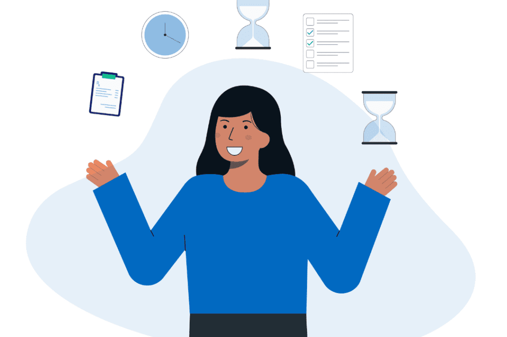

Compétence 5 : Conduire un projet
-
Identifier les besoins
- UE1.5 Identifier les besoins métiers
- UE2.5 Identifier besoins utilisateurs
-
Suivi de projet
- UE3.5 Appliquer suivi
- UE4.5 Adapter suivi
-

Conception & mise en œuvre
- UE5.5 Conception projet
- UE6.5 Mise en œuvre
×
Ressources des UEs
- UE1.5 - PPP – 0 0 0, Web BD – Coeff 4
- UE2.5 - Nouvelles BD – Coeff 12, Optimisation données – Coeff 26
- UE3.5 - Anglais – Coeff 8
- UE4.5 - Administration BD – Coeff 7
- UE5.5 - Aide à la décision – Coeff 33
- UE6.5 - Organisation & protection – Coeff 10, Stage – Coeff 45
×
Apprentissages Critiques (AC)
- AC 1 – Mesurer les impacts économiques, sociétaux et technologiques
- AC 2 – Intégrer un projet dans le SI
- AC 3 – Adapter un SI
×
Composantes Essentielles (CE)
- CE 1 – Communiquer efficacement
- CE 2 – Respecter règles juridiques
- CE 3 – Gestion éthique et durable
- CE 4 – Démarche proactive et critique